library(bbsBayes2)
library(sf) # Spatial data manipulations
library(dplyr) # General data manipulations
library(ggplot2) # Plotting
library(patchwork) # mutli-plotIn this vignette we’ll explore the various ways you can stratify the BBS data in preparation for running the models.
You can use existing, pre-defined stratifications, subset an existing stratification, or load your own custom stratification, either using a completely new set of spatial data, or by modifying the spatial polygons of an existing strata.
This vignette assumes that the BBS data have already been downloaded and that you are familiar with the basics of the bbsBayes2 workflow
Stratifying with built-in stratifications
The built-in stratifications are bbs_usgs, bbs_cws, bcr, latlong, prov_state.
-
bbs_cws– Intersections of Political regions X Bird Conservation Regions (Stratification used by the Canadian Wildlife Service [CWS] for national status reporting) -
bbs_usgs– Intersections of Political regions X Bird Conservation Regions (Stratification used by the United Status Geological Survey [USGS] for national status reporting) -
bcr– Bird Conservation Regions only -
prov_state– Political regions only - states, provinces, and territories -
latlong– Grid-cells of 1 degree of latitude X 1 degree of longitude, aka “degree-blocks”. These are the original survey design strata for the BBS. Routes are established at randomized locations within these degree-blocks.
You can visualize these stratifications by looking at the maps
included in bbsBayes2 with load_map().
ggplot(data = load_map("bbs_usgs"), aes(fill = strata_name)) +
geom_sf() +
scale_fill_viridis_d(guide = "none")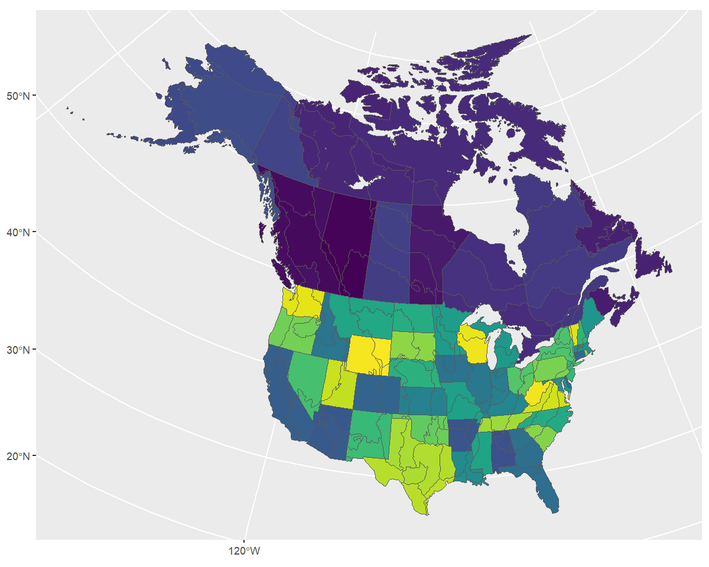
To stratify BBS data, you can use these existing stratifications by
specifying by = "name" in the stratify()
function.
s <- stratify(by = "bbs_usgs", species = "Canada Jay")
#> Using 'bbs_usgs' (standard) stratification
#> Loading BBS data...
#> Filtering to species Canada Jay (4840)
#> Stratifying data...
#> Renaming routes...Custom stratifications
Load a custom stratification map
To define a completely different stratification, you’ll need to provide a spatial data object with polygons defining your strata.
In our example we’ll use WBPHS stratum boundaries for 2019. This is available from available from the US Fish and Wildlife Service Catalogue: https://ecos.fws.gov/ServCat/Reference/Profile/142628
You can either download it by hand, or with the following code.
z <- "output/WBPHS_Stratum_Boundaries_2019.zip"
download.file(url = "https://ecos.fws.gov/ServCat/DownloadFile/213149",
destfile = z,
cacheOK = FALSE)
unzip(z) # Unzip - if you get a file is corrupt message, download it manually
unlink(z) # Remove the zipped fileTo use this file in bbsBayes2, we need to load it as an sf object using the sf package.
map <- sf::read_sf("output/WBPHS_stratum_boundaries_2019.shp")
ggplot(map, aes(fill = factor(STRAT))) +
geom_sf() +
scale_fill_viridis_d(guide = "none")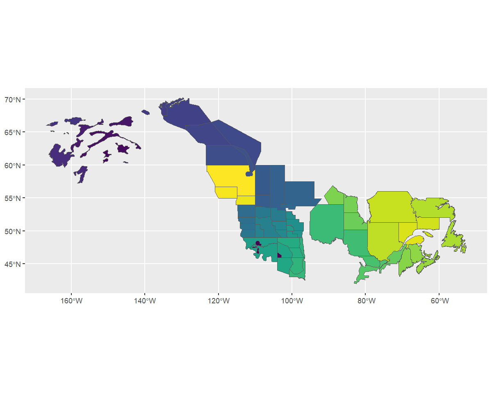
We see that it has one column that reflects the stratum names. First
we’ll rename this column to strata_name which is what
stratify() requires.
map <- rename(map, strata_name = STRAT)Now we have the spatial data and relevant information to pass to
stratify().
When using a custom stratification, the by argument
becomes the name you want to apply. Let’s use something informative, but
short (although there’s no limit). We also need to give the function our
map.
s <- stratify(by = "WBPHS_2019", species = "Canada Jay", strata_custom = map)
#> Using 'wbphs_2019' (custom) stratification
#> Loading BBS data...
#> Filtering to species Canada Jay (4840)
#> Stratifying data...
#> Preparing custom strata (EPSG:4326; WGS 84)...
#> Summarizing strata...
#> Calculating area weights...
#> Joining routes to custom spatial data...
#> Renaming routes...
#> Omitting 100,155/119,567 route-years that do not match a stratum.
#> To see omitted routes use `return_omitted = TRUE` (see ?stratify)Note that strata names are automatically put into lower case for consistency.
We can take a quick look at the output, by looking at the meta data and routes contained therein.
s[["meta_data"]]
#> $stratify_by
#> [1] "wbphs_2019"
#>
#> $stratify_type
#> [1] "custom"
#>
#> $species
#> [1] "Canada Jay"
s[["routes_strata"]]
#> # A tibble: 19,412 × 33
#> strata_name country_num state_num route route_name active latitude longitude bcr route_type_id
#> <chr> <dbl> <dbl> <chr> <chr> <dbl> <dbl> <dbl> <dbl> <dbl>
#> 1 3 840 3 3-8 TOWER BLUFFS 1 63.6 -144. 4 1
#> 2 3 840 3 3-8 TOWER BLUFFS 1 63.6 -144. 4 1
#> 3 3 840 3 3-8 TOWER BLUFFS 1 63.6 -144. 4 1
#> 4 3 840 3 3-8 TOWER BLUFFS 1 63.6 -144. 4 1
#> 5 3 840 3 3-8 TOWER BLUFFS 1 63.6 -144. 4 1
#> 6 3 840 3 3-8 TOWER BLUFFS 1 63.6 -144. 4 1
#> 7 3 840 3 3-8 TOWER BLUFFS 1 63.6 -144. 4 1
#> 8 3 840 3 3-8 TOWER BLUFFS 1 63.6 -144. 4 1
#> 9 3 840 3 3-8 TOWER BLUFFS 1 63.6 -144. 4 1
#> 10 3 840 3 3-8 TOWER BLUFFS 1 63.6 -144. 4 1
#> # ℹ 19,402 more rows
#> # ℹ 23 more variables: route_type_detail_id <dbl>, route_data_id <dbl>, rpid <dbl>, year <dbl>, month <dbl>,
#> # day <dbl>, obs_n <dbl>, total_spp <dbl>, start_temp <dbl>, end_temp <dbl>, temp_scale <chr>,
#> # start_wind <dbl>, end_wind <dbl>, start_sky <dbl>, end_sky <dbl>, start_time <dbl>, end_time <dbl>,
#> # assistant <dbl>, quality_current_id <dbl>, run_type <dbl>, state <chr>, st_abrev <chr>, country <chr>To get a different look we can also plot this data on top of our map
using ggplot2. Note that we use factor() to ensure the
strata names are categorical.
rts <- s[["routes_strata"]] %>%
st_as_sf(coords = c("longitude", "latitude"), crs = 4326)
ggplot() +
geom_sf(data = map, aes(fill = factor(strata_name)), alpha = 0.3) +
geom_sf(data = rts, aes(colour = factor(strata_name)), size = 1) +
scale_fill_viridis_d(aesthetics = c("colour", "fill"), guide = "none")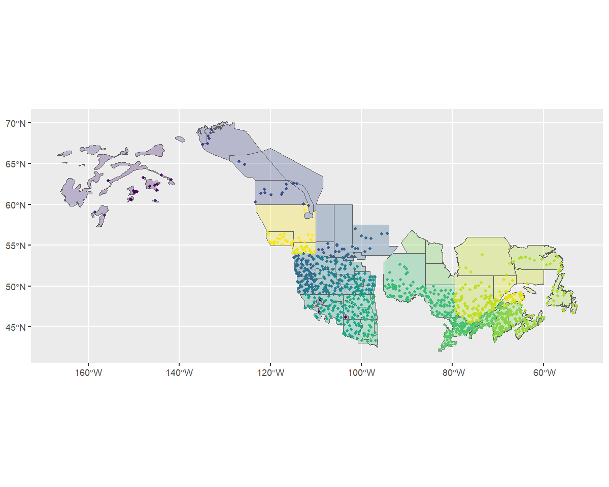
Based on the message we received during stratification
(Omitting...) and this map, it looks as if our custom
stratification is excluding some BBS data.
We can re-run the stratification with
return_omitted = TRUE which will attach a data frame of
omitted strata to the output.
s <- stratify(by = "WBPHS_2019", species = "Canada Jay", strata_custom = map,
return_omitted = TRUE)
#> Using 'wbphs_2019' (custom) stratification
#> Loading BBS data...
#> Filtering to species Canada Jay (4840)
#> Stratifying data...
#> Preparing custom strata (EPSG:4326; WGS 84)...
#> Summarizing strata...
#> Calculating area weights...
#> Joining routes to custom spatial data...
#> Renaming routes...
#> Omitting 100,155/119,567 route-years that do not match a stratum.
#> Returning omitted routes.
s[["routes_omitted"]]
#> # A tibble: 100,155 × 11
#> year strata_name country state route route_name latitude longitude bcr obs_n total_spp
#> <dbl> <chr> <chr> <chr> <chr> <chr> <dbl> <dbl> <dbl> <dbl> <dbl>
#> 1 1967 <NA> US ALABAMA 2-1 ST FLORIAN 34.9 -87.6 27 1140018 56
#> 2 1969 <NA> US ALABAMA 2-1 ST FLORIAN 34.9 -87.6 27 990062 52
#> 3 1970 <NA> US ALABAMA 2-1 ST FLORIAN 34.9 -87.6 27 990062 52
#> 4 1971 <NA> US ALABAMA 2-1 ST FLORIAN 34.9 -87.6 27 990062 56
#> 5 1972 <NA> US ALABAMA 2-1 ST FLORIAN 34.9 -87.6 27 990062 54
#> 6 1973 <NA> US ALABAMA 2-1 ST FLORIAN 34.9 -87.6 27 1060057 52
#> 7 1974 <NA> US ALABAMA 2-1 ST FLORIAN 34.9 -87.6 27 1060057 55
#> 8 1975 <NA> US ALABAMA 2-1 ST FLORIAN 34.9 -87.6 27 1060057 59
#> 9 1976 <NA> US ALABAMA 2-1 ST FLORIAN 34.9 -87.6 27 1060057 56
#> 10 1977 <NA> US ALABAMA 2-1 ST FLORIAN 34.9 -87.6 27 1060057 51
#> # ℹ 100,145 more rowsLet’s take a look at this visually.
omitted <- st_as_sf(s[["routes_omitted"]], coords = c("longitude", "latitude"),
crs= 4326)
ggplot() +
geom_sf(data = map, aes(fill = factor(strata_name)), alpha = 0.3) +
geom_sf(data = rts, aes(colour = factor(strata_name)), size = 1, alpha = 0.5) +
geom_sf(data = omitted, size = 0.75, alpha = 0.5) +
scale_fill_viridis_d(aesthetics = c("colour", "fill"), guide = "none")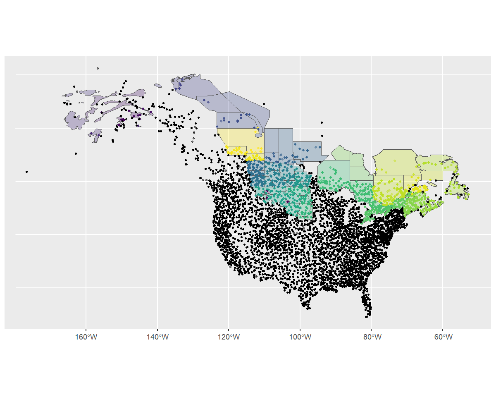
The map shows that most of the omitted routes are routes that are clearly outside of our desired stratification. It does also show that there are some BBS route start-points that are just outside of the strata (e.g., some routes in Nova Scotia and Alaska). The user can decide what to do with these sorts of minor overlap issues. For example, buffering the original stratification map might make sense in some situations.
To fit the model, we follow the standard workflow using our stratified data.
p <- prepare_data(s,
min_year = 2000,
max_year = 2021) #subset a shorter time-span to speed model-fit
mp <- prepare_model(p,model = "slope",
model_variant = "hier")
m <- run_model(mp,
iter_warmup = 500,
iter_sampling = 100)Looking at indices and trends
Now we can start to look at the indices and trends related to our model.
generate_indices() creates indices at different regional
levels. By default these are “continent” and “stratum”, but you can add
“prov_state”, “bcr”, “bcr_by_country” (where appropriate). You can also
create your own regional divisions and provide them as a
regions_index data frame.
For example, let’s imagine we would like to calculate regional indices for each stratum, country, province/state, as well as for a custom division of east vs. west.
First we’ll need to tell the function which strata belong to which province or state, and then which belong to the ‘east’ and which to the ’west.
We’ll start by using a helper function
assign_prov_state(). This function takes a map of strata
and assigns each strata to a province or state depending on the amount
of overlap. By default it will warn if the amount of overlap is less
than 75%, but in this case, we will lower that cutoff to 60%. The plot
gives us a chance to make a quick assessment of whether we’re happy with
how the various strata have been assigned.
rindex <- assign_prov_state(map, min_overlap = 0.6, plot = TRUE)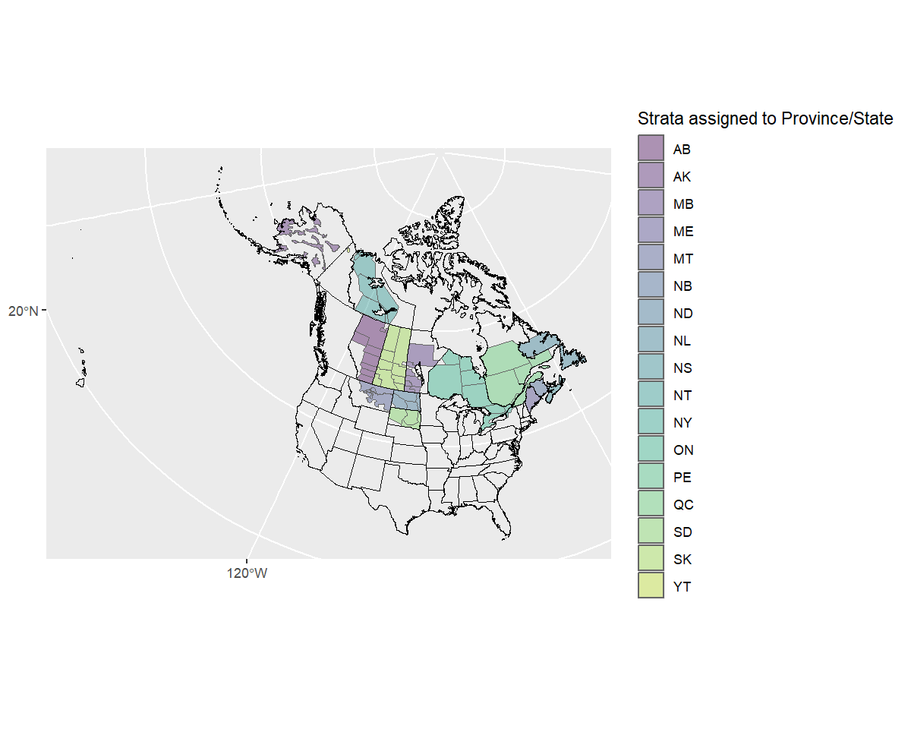
Next we’ll define the east/west divide by hand. If we plot the strata by name, we can pick out which are eastern and which western.
ggplot(rindex) +
geom_sf(data = load_map(type = "North America")) +
geom_sf() +
geom_sf_text(aes(label = strata_name))
#> Warning in st_point_on_surface.sfc(sf::st_zm(x)): st_point_on_surface may not give correct results for
#> longitude/latitude data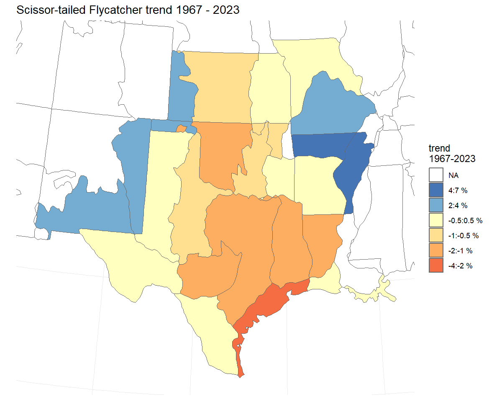
Let’s add a column splitting the strata into eastern and western
rindex <- mutate(
rindex,
east_west = if_else(as.numeric(strata_name) < 50 | as.numeric(strata_name) > 74,
"west",
"east"))And now double check!
ggplot(data = rindex) +
geom_sf(data = load_map(type = "North America")) +
geom_sf(data = rindex, aes(fill = east_west), alpha = 0.5)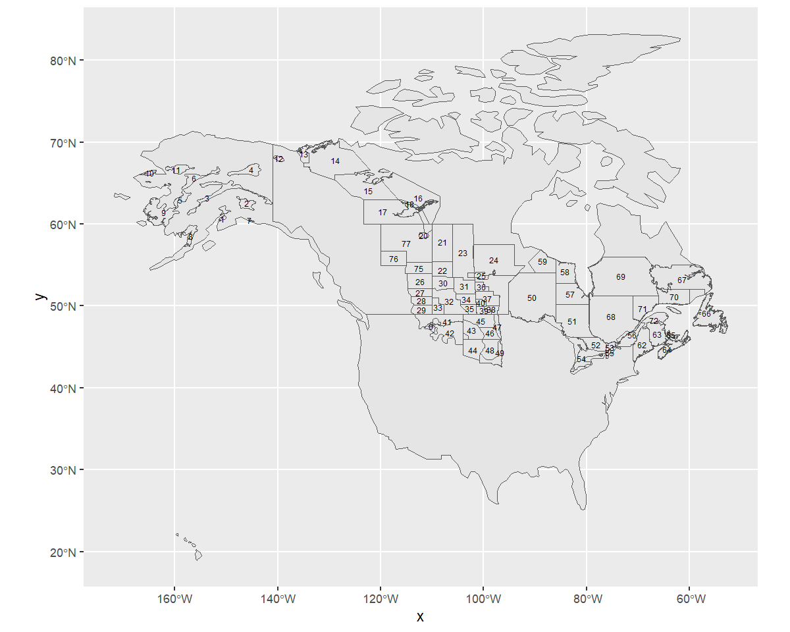
Now we’ll create our indices and trends
i <- generate_indices(
m,
regions = c("stratum", "country", "prov_state", "east_west"),
regions_index = rindex)
#> Processing region stratum
#> Processing region country
#> Processing region prov_state
#> Processing region east_west
t <- generate_trends(i)
# currently, only the built-in stratifications can be used with
# the plot_map() function
# trend_map <- plot_map(t)We can plot each of these indices with plot_indices()
which creates a list of plots.
p <- plot_indices(i)
names(p)
#> [1] "1" "14" "17" "18"
#> [5] "2" "22" "23" "24"
#> [9] "26" "3" "31" "44"
#> [13] "50" "51" "52" "56"
#> [17] "62" "63" "64" "66"
#> [21] "67" "68" "69" "71"
#> [25] "72" "75" "76" "77"
#> [29] "Canada" "United_States_of_America" "AB" "AK"
#> [33] "MB" "ME" "NB" "NL"
#> [37] "NS" "NT" "ON" "QC"
#> [41] "SD" "SK" "east" "west"
p[["east"]] + p[["west"]]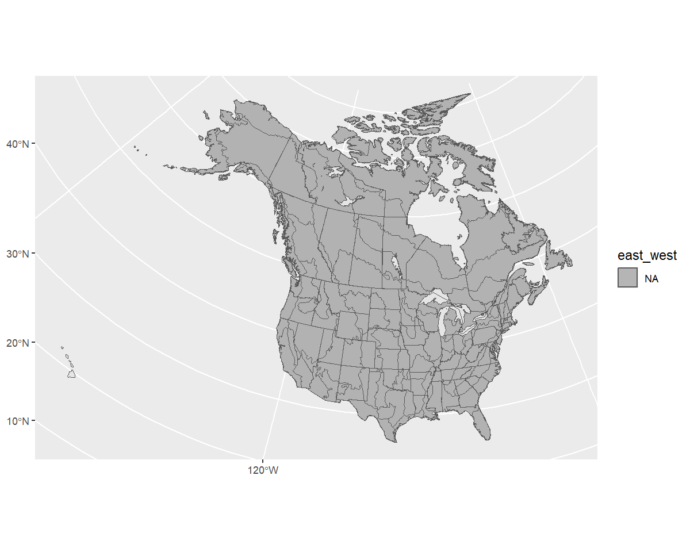
Finally we can even create geofaceted plots (which is only possible in our case because we assigned our strata to Provinces and States and calculated indices for these regions).
plot_geofacet(i, trends = t, multiple = TRUE)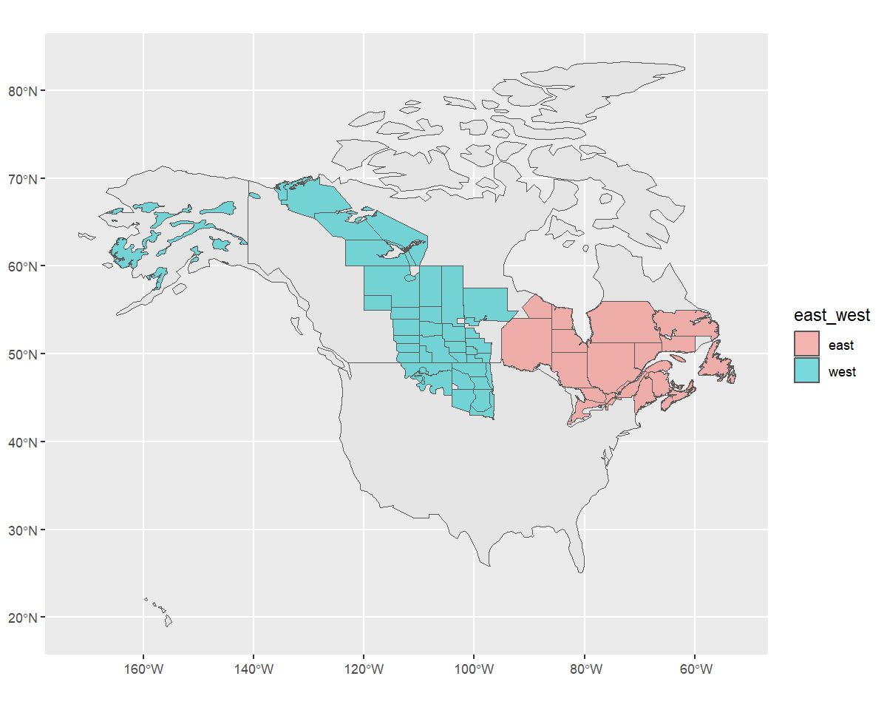
Subsetting an existing stratification
But what if you want to use the BBS CWS stratification, but only really want to look at Canadian regions?
In this case you’ll subset the BBS CWS stratification and give
stratify() that data set in addition to the
specification.
In addition to maps, stratifications are available as data frames in
the bbs_strata object.
names(bbs_strata)
#> [1] "bbs_usgs" "bbs_cws" "bcr" "latlong" "prov_state"
head(bbs_strata[["bbs_cws"]])
#> # A tibble: 6 × 7
#> strata_name area_sq_km country country_code prov_state bcr bcr_by_country
#> <chr> <dbl> <chr> <chr> <chr> <dbl> <chr>
#> 1 CA-AB-10 52565. Canada CA AB 10 Canada-BCR_10
#> 2 CA-AB-11 149352. Canada CA AB 11 Canada-BCR_11
#> 3 CA-AB-6 445135. Canada CA AB 6 Canada-BCR_6
#> 4 CA-AB-8 6987. Canada CA AB 8 Canada-BCR_8
#> 5 CA-BC-10 383006. Canada CA BC 10 Canada-BCR_10
#> 6 CA-BC-4 193180. Canada CA BC 4 Canada-BCR_4We can now modify and use this data frame as we like.
my_cws <- filter(bbs_strata[["bbs_cws"]], country == "Canada")
s <- stratify(by = "bbs_cws", species = "Canada Jay", strata_custom = my_cws)
#> Using 'bbs_cws' (subset) stratification
#> Loading BBS data...
#> Filtering to species Canada Jay (4840)
#> Stratifying data...
#> Combining BCR 7 and NS and PEI...
#> Renaming routes...
#> Omitting 101,474/119,567 route-years that do not match a stratum.
#> To see omitted routes use `return_omitted = TRUE` (see ?stratify)Note that the stratification is now “bbs_cws” and “subset”
s[["meta_data"]]
#> $stratify_by
#> [1] "bbs_cws"
#>
#> $stratify_type
#> [1] "subset"
#>
#> $species
#> [1] "Canada Jay"We can see the strata included by looking at the
meta_strata
print(s[["meta_strata"]], n = Inf)
#> # A tibble: 30 × 7
#> strata_name area_sq_km country country_code prov_state bcr bcr_by_country
#> <chr> <dbl> <chr> <chr> <chr> <dbl> <chr>
#> 1 CA-AB-10 52565. Canada CA AB 10 Canada-BCR_10
#> 2 CA-AB-11 149352. Canada CA AB 11 Canada-BCR_11
#> 3 CA-AB-6 445135. Canada CA AB 6 Canada-BCR_6
#> 4 CA-BC-10 383006. Canada CA BC 10 Canada-BCR_10
#> 5 CA-BC-4 193180. Canada CA BC 4 Canada-BCR_4
#> 6 CA-BC-5 199820. Canada CA BC 5 Canada-BCR_5
#> 7 CA-BC-6 106917. Canada CA BC 6 Canada-BCR_6
#> 8 CA-BC-9 59939. Canada CA BC 9 Canada-BCR_9
#> 9 CA-BCR7-7 1743744. Canada CA BCR7 7 Canada-BCR_7
#> 10 CA-MB-11 70101. Canada CA MB 11 Canada-BCR_11
#> 11 CA-MB-12 15312. Canada CA MB 12 Canada-BCR_12
#> 12 CA-MB-6 127190. Canada CA MB 6 Canada-BCR_6
#> 13 CA-MB-8 234151. Canada CA MB 8 Canada-BCR_8
#> 14 CA-NB-14 72991. Canada CA NB 14 Canada-BCR_14
#> 15 CA-NL-8 157083. Canada CA NL 8 Canada-BCR_8
#> 16 CA-NSPE-14 61502. Canada CA NSPE 14 Canada-BCR_14
#> 17 CA-NT-3 394769. Canada CA NT 3 Canada-BCR_3
#> 18 CA-NT-6 509423. Canada CA NT 6 Canada-BCR_6
#> 19 CA-NU-3 1969549. Canada CA NU 3 Canada-BCR_3
#> 20 CA-ON-12 206181. Canada CA ON 12 Canada-BCR_12
#> 21 CA-ON-13 83859. Canada CA ON 13 Canada-BCR_13
#> 22 CA-ON-8 435545. Canada CA ON 8 Canada-BCR_8
#> 23 CA-QC-12 174314. Canada CA QC 12 Canada-BCR_12
#> 24 CA-QC-13 28409. Canada CA QC 13 Canada-BCR_13
#> 25 CA-QC-14 67711. Canada CA QC 14 Canada-BCR_14
#> 26 CA-QC-8 470310. Canada CA QC 8 Canada-BCR_8
#> 27 CA-SK-11 241315. Canada CA SK 11 Canada-BCR_11
#> 28 CA-SK-6 177763. Canada CA SK 6 Canada-BCR_6
#> 29 CA-SK-8 188615. Canada CA SK 8 Canada-BCR_8
#> 30 CA-YT-4 435349. Canada CA YT 4 Canada-BCR_4Modifying existing BBS maps
Stratify by custom stratification, using sf map object. For example, let’s look at an east/west divide of southern Canada with BBS CWS strata.
First we’ll start with the CWS BBS data
map <- load_map("bbs_cws")We’ll modify this by first looking only at provinces (omitting the northern territories), transforming to the GPS CRS (4326), and ensuring the resulting polygons are valid.
new_map <- map %>%
filter(country_code == "CA", !prov_state %in% c("NT", "NU", "YT")) %>%
st_transform(4326)%>%
st_make_valid()Now we can crop this map to make a western and an eastern portion, defined by longitude and latitude (which is why we first transformed to the GPS CRS).
west <- st_crop(new_map, xmin = -140, ymin = 42, xmax = -95, ymax = 68) %>%
mutate(strata_name = "west")
#> Warning: attribute variables are assumed to be spatially constant throughout all geometries
east <- st_crop(new_map, xmin = -95, ymin = 42, xmax = -52, ymax = 68) %>%
mutate(strata_name = "east")
#> Warning: attribute variables are assumed to be spatially constant throughout all geometriesNow we’ll bind these together and transform back to the original CRS
new_strata <- bind_rows(west, east) %>%
st_transform(st_crs(map))
ggplot() +
geom_sf(data = map) +
geom_sf(data = new_strata, aes(fill = strata_name), alpha = 1)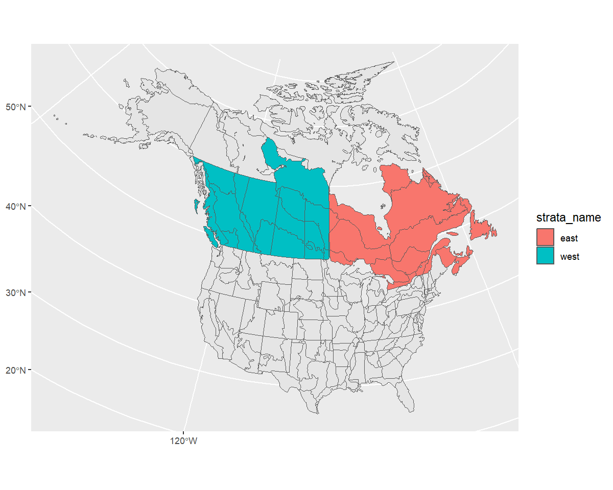
Looks good! Let’s use it in our stratification and take a look at the points afterwards to ensure they’ve been categorized appropriately.
s <- stratify(by = "canada_ew", species = "Canada Jay",
strata_custom = new_strata)
#> Using 'canada_ew' (custom) stratification
#> Loading BBS data...
#> Filtering to species Canada Jay (4840)
#> Stratifying data...
#> Preparing custom strata (ESRI:102008; North_America_Albers_Equal_Area_Conic)...
#> Summarizing strata...
#> Calculating area weights...
#> Joining routes to custom spatial data...
#> Renaming routes...
#> Omitting 103,468/119,567 route-years that do not match a stratum.
#> To see omitted routes use `return_omitted = TRUE` (see ?stratify)
s$meta_data
#> $stratify_by
#> [1] "canada_ew"
#>
#> $stratify_type
#> [1] "custom"
#>
#> $species
#> [1] "Canada Jay"
routes <- s$routes_strata %>%
st_as_sf(coords = c("longitude", "latitude"), crs = 4326)
ggplot() +
geom_sf(data = new_strata, aes(fill = strata_name), alpha = 1) +
geom_sf(data = routes, aes(shape = strata_name))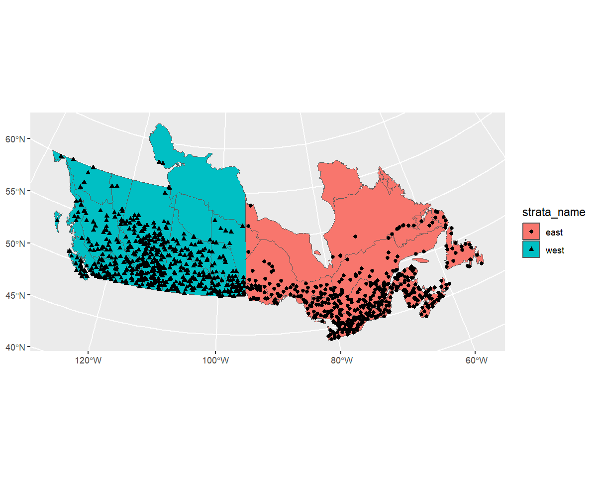